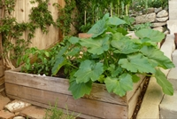

Contraintes de l'espace
Le premier
souci pour le jardinier, lorsqu'il habite en ville, c'est de n'avoir
qu'un petit bout de terrain (petit jardin, jardin de ville,
balcon...) à travailler. Pour optimiser l'utilisation de cet espace,
4 principes sont à respecter.
La mise en place d'un potager en
carré oblige le jardinier à évaluer ses besoins et le pousse à
utiliser le moindre espace disponible.